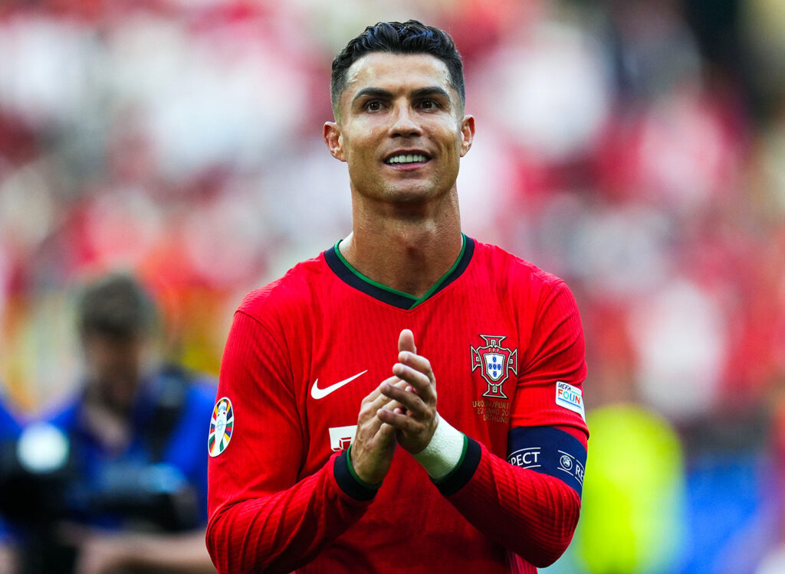
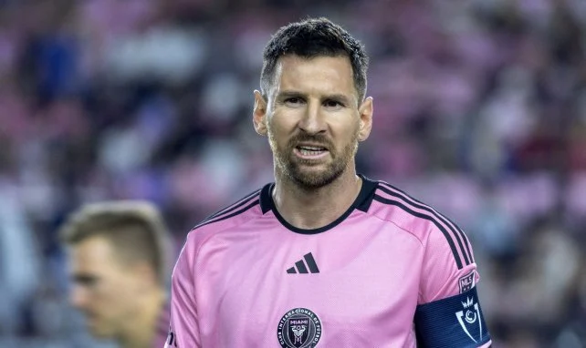

QUESTION 1: Qui est le meilleur Joueur du Monde?
Reponse: VRAIE
Note: 10/10
Appréciation
Bonne réponse vous avez fait le bon choix,Cristiano Ronaldo[CR7] est le meilleur joueur du monde du football... il a tout dévoré sur son passage et aujourd'hui malgré son âge, il fait des merveilles.
merci et à Bientôt !!!
Correcteur: MAHAMAN KAMAGATE.


Reponse: FAUSSE
Note: 00/10
Appréciation
Désolé le meilleur joueur du mon n'est pas Lionnel messi,
mais plutôt Cristiano Ronaldo
Il convient de noter que Lionnel Messi reste le 2e meilleur du monde.
merci et à Bientôt !!!
Correcteur: MAHAMAN KAMAGATE.